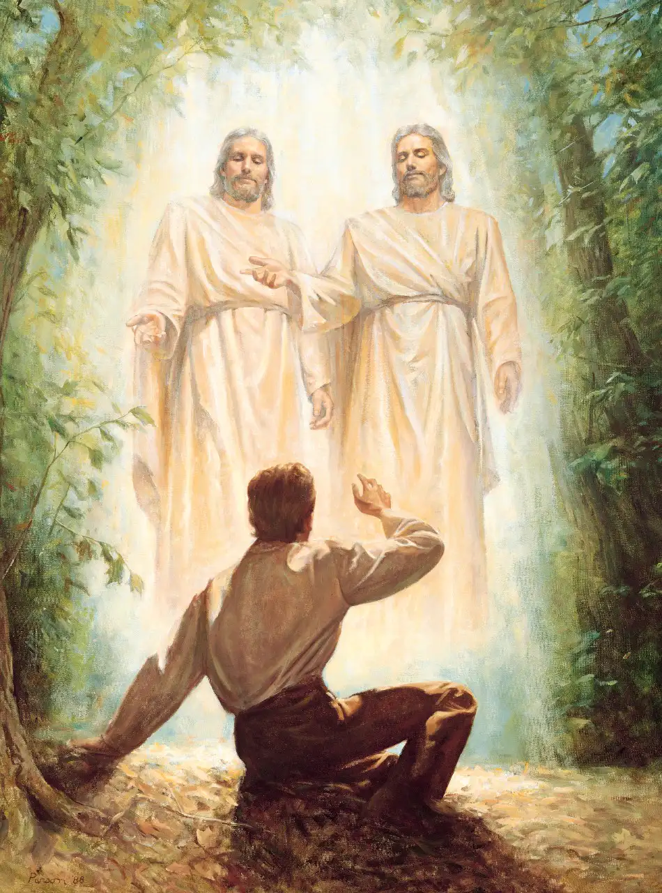
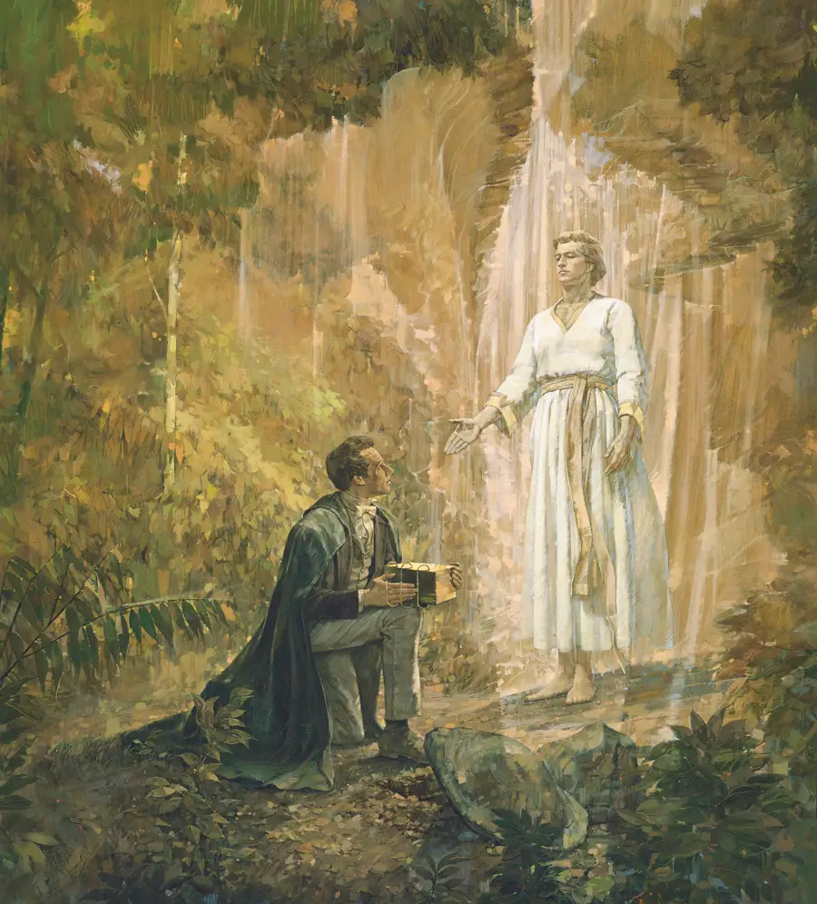

El evangelio de Jesucristo fue restaurado en la tierra. Descubre cómo y por qué.
Después de que Jesucristo estableció Su Iglesia y ascendió al cielo, Sus apóstoles fueron perseguidos y asesinados uno a uno. Con su muerte, la autoridad del sacerdocio — el poder de actuar en nombre de Dios — se perdió de la tierra. Este período se conoce como la Gran Apostasía.
Durante siglos, muchas verdades del evangelio se perdieron o cambiaron. Los hombres buscaban a Dios con sinceridad, pero no tenían acceso a la plenitud del evangelio que Jesucristo había enseñado. Dios, en Su amor por Sus hijos, preparó el momento para restaurar todo lo que se había perdido.
En la primavera de 1820, un joven de 14 años llamado José Smith tenía preguntas sobre qué iglesia era la verdadera. Influido por Santiago 1:5, decidió orar para preguntarle a Dios directamente. Mientras oraba en un bosque de Nueva York, tuvo una visión en la que Dios el Padre y Jesucristo se le aparecieron.
Este evento, conocido como la Primera Visión, marcó el inicio de la Restauración del evangelio. Dios había vuelto a hablar con los hombres.

La Restauración no es solo historia — tiene implicaciones profundas para cada persona hoy. Significa que la plenitud del evangelio de Jesucristo está disponible de nuevo: la autoridad del sacerdocio, los convenios sagrados, las ordenanzas salvadoras y la guía de profetas y apóstoles vivientes.
Si tienes preguntas sobre José Smith, la Primera Visión o el origen de la Iglesia, nos encantaría hablar contigo sin ningún tipo de presión.
Habla con nosotros. Compartiremos contigo el mensaje de la Restauración con amor y respeto.
Tengo preguntas